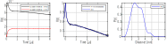

Basic experimental signal processing¶
%================================================================
% DeerAnalyis2
% Example: Basic experimental signal processing
%================================================================
clear,clc,clf
% Preparation
%----------------------------------------------
% Load experimental data
[traw,Vraw] = deerload('data/deer_broad_50K_4us');
% Use a reduced distance axis length to speed-up processing
r = linspace(0.5,7,100); % nm
% Pre-processing
%----------------------------------------------
V = correctphase(Vraw);
t = correctzerotime(V,traw);
V = correctscale(V,t);
% Processing
%----------------------------------------------
% Fit background
[B,lambda] = fitbackground(V,t,@td_strexp);
% Prepare regularization
KB = dipolarkernel(t,r,lambda,B);
% Run fitting
Pfit = fitregmodel(V,KB,r,'tikhonov','aic');
% Transform to time-domain
Vfit = KB*Pfit;
% Plotting
%----------------------------------------------
subplot(131)
plot(traw,real(Vraw),'k',traw,imag(Vraw),'r','LineWidth',1)
box on, grid on, axis tight
xlabel('time (\mus)')
ylabel('V(t)')
legend('experimental (Re)','experimental (Im)')
subplot(132)
plot(t,V,'k',t,Vfit,'b','LineWidth',1)
box on, grid on, axis tight
xlabel('time (\mus)')
ylabel('V(t)')
legend('pre-processed','fit')
subplot(133)
plot(r,Pfit,'b','LineWidth',1)
box on, grid on, axis tight
xlabel('distance (nm)')
ylabel('P(r)')
legend('fit')
axis tight
